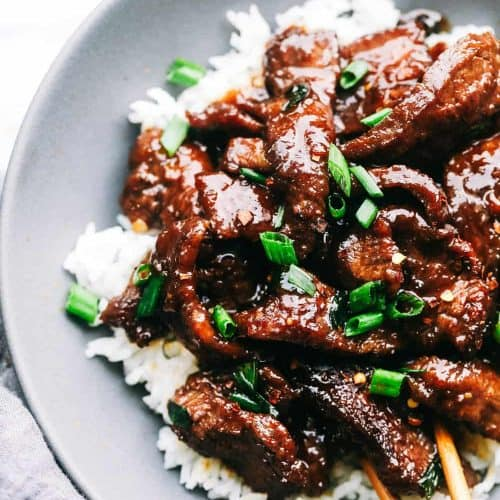

Mongolian Beef

Description
This Homemade Mongolian Beef is the perfect (under 30-minute) recipe the whole family will love. The crispy yet tender beef is amazing with the garlic and ginger sweet and savory sauce.
Ingredients
Mongolian Beef Ingredients
- 1 carrot, peeled and julienned
- 2 eggs
- 1 red bell pepper
- 1 Tbsp unsalted butter
- 2 Tbsp oil
- 1 lb flank steak
- 1/4 cup cornstarch
Sauce Ingredients
- 1 tsp fresh ginger
- 4 garlic cloves
- 1/3 cup brown sugar
- 1/3 cup water
- 1/3 cup low-sodium soy sauce
- 1 tsp Sriracha, or added to taste
- 1/3 cup green onions
Steps
- Place beef slices in a bowl, add cornstarch and stir to completely coat.
- In a bowl, combine the ingredients for the sauce and stir until well combined, set aside.
- Julienne the carrot and pepper, slice the onions. Thinly slice the beef into bite-sized strips.
- In a skillet, heat 1 Tbsp oil with 1 Tbsp butter over med/high heat. Add the carrot and peppers, saute to desired tenderness. Remove the vegetables from the skillet.
- Add 1 Tbsp oil over high heat. Once hot, add the beef and cook about 2 minutes per side.
- Add the vegetables back into the skillet with the green onion.
- Pour the sauce and stir to combine. Turn heat to medium/low and cook until the sauce thickens, about 3 minutes.